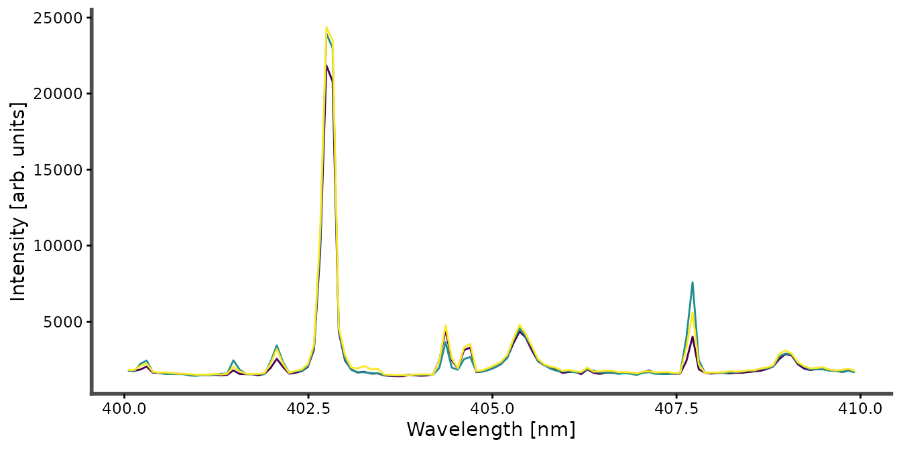
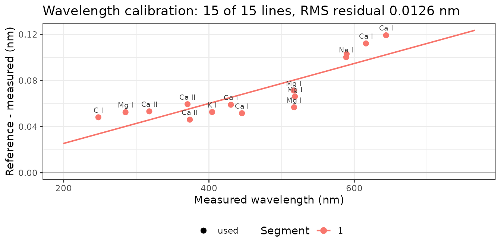
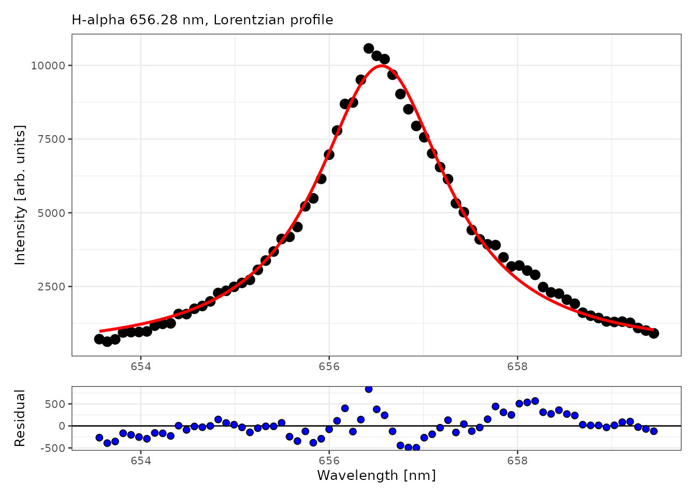
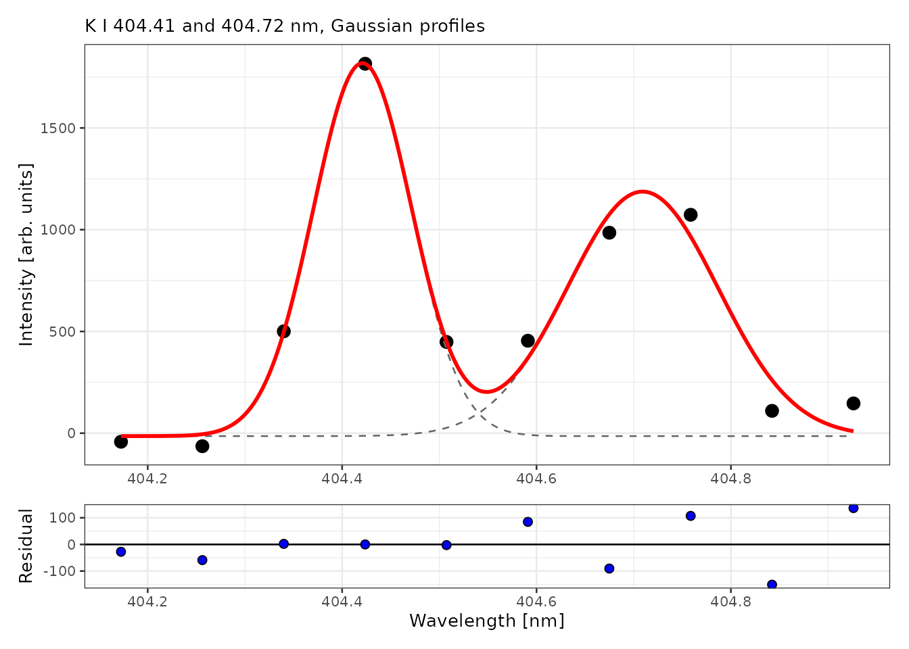
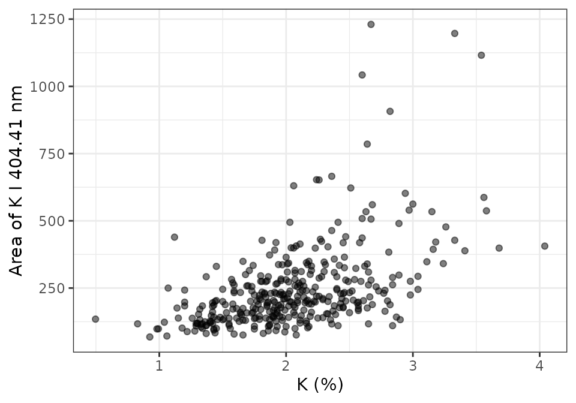

A typical LIBS analysis goes through four stages, each covered by a vignette:
- Fitting emission lines (this vignette): identify the lines, correct the wavelength axis and measure line areas.
-
Preprocessing with recipe steps:
vignette("preprocessing"). -
Calibration and figures of merit:
vignette("calibration"). -
Plasma diagnostics:
vignette("plasma-diagnostics").
All four use forageLIBS: 368 spectra of dried forage
samples, with laboratory concentrations of 12 elements.
library(specProc)
library(dplyr)
library(purrr)
library(ggplot2)
data("forageLIBS")
spectra_id <- forageLIBS |> select(1:2) |> names()
minerals <- forageLIBS |> select(3:14) |> names()
spectra <- forageLIBS |> select(-all_of(c(spectra_id, minerals)))
wl <- as.numeric(names(spectra))Each row of spectra is one spectrum, the mean of 8 laser
shots, and the column names are the wavelengths (nm):
forageLIBS |>
slice(1:3) |>
select(Measurement, all_of(names(spectra)[wl > 400 & wl < 410])) |>
plot_spectra(id = Measurement)
Identifying the lines
libs_lines() lists the strongest lines of given species
in a wavelength range, from the NIST Atomic Spectra Database, and
plot_lines() marks them on a spectrum.
line_finder() opens an interactive app that does both.
These functions need an internet connection:
candidates <- libs_lines(c("K I", "Ca I", "Fe I", "Mn I"), wavelength = c(400, 410))
plot_lines(colMeans(spectra), candidates)
line_finder(spectra)Correcting the wavelength axis
The measured lines are shifted from their tabulated wavelengths.
wavelength_calibration() locates known lines in the mean
spectrum and fits a correction of the axis. The instrument joins several
detectors (the wavelengths step back at 766 nm), and each detector has
its own calibration: we correct the first one, from 199 to 766 nm, which
holds the lines used below.
first_detector <- spectra[seq_len(which(diff(wl) < 0)[1])]
reference <- c(`C I` = 247.856, `Mg I` = 285.213, `Ca II` = 317.933, `Ca II` = 370.603,
`Ca II` = 373.690, `K I` = 404.414, `Ca I` = 430.253, `Ca I` = 445.478,
`Mg I` = 516.732, `Mg I` = 517.268, `Mg I` = 518.360, `Na I` = 588.995,
`Na I` = 589.592, `Ca I` = 616.217, `Ca I` = 643.907)
wavecal <- wavelength_calibration(first_detector, reference)
wavecal$segments
#> # A tibble: 1 × 6
#> segment from to degree n_lines rmse
#> <int> <dbl> <dbl> <int> <int> <dbl>
#> 1 1 199. 766. 1 15 0.0136
plot_wavelength_calibration(wavecal)
The offset grows from 0.05 nm in the UV to 0.12 nm in the red, about
one channel, and the residuals of the linear correction are close to
0.01 nm. apply_calibration() relabels the columns with the
corrected wavelengths. We also remove the continuum with
baseline_arpls(), and average the spectra for a clean
example:
calibrated <- apply_calibration(first_detector, wavecal)
corrected <- baseline_arpls(calibrated, lambda = 1e5, max.iter = 20)$correction
wl_corrected <- as.numeric(names(corrected))
mean_spectrum <- colMeans(corrected)
# The channels between two wavelengths, as a one-row table
window <- function(from, to, x = mean_spectrum) {
keep <- wl_corrected > from & wl_corrected < to
if (is.null(dim(x))) as_tibble(as.list(x[keep])) else x[keep]
}Line profiles
An emission line of a laser-induced plasma is broadened by several mechanisms: the instrument and the Doppler effect give a Gaussian profile, the Stark effect a Lorentzian one, and both together a Voigt profile. specProc provides the four profiles, parametrized by their full widths at half maximum:
| Function | Profile | Widths |
|---|---|---|
gaussian_profile() |
Gaussian | wG |
lorentzian_profile() |
Lorentzian | wL |
voigt_profile() |
exact Voigt (Faddeeva function, C++) |
wG, wL
|
pseudo_voigt_profile() |
Thompson–Cox–Hastings pseudo-Voigt |
wG, wL
|
Fitting a single line
peak_fit() fits y = y_0 + A
\cdot f(x; x_c, w) to each spectrum (one per row, wavelengths as
column names) by nonlinear least squares, with starting values estimated
from the data. The hydrogen H\alpha
line at 656.28 nm comes from the water of the samples. Its width is
dominated by the Stark effect, and the choice of profile matters:
halpha <- window(653.5, 659.5)
fits <- c("gaussian", "lorentzian", "pseudo_voigt", "voigt") |>
set_names() |>
map(\(p) peak_fit(halpha, profile = p))
tibble(
profile = names(fits),
AIC = map_dbl(fits, \(f) AIC(f$fit[[1]])),
area = map_dbl(fits, \(f) coef(f$fit[[1]])[["A"]])
) |>
mutate(across(c(AIC, area), round))
#> # A tibble: 4 × 3
#> profile AIC area
#> <chr> <dbl> <dbl>
#> 1 gaussian 1081 14650
#> 2 lorentzian 1002 25884
#> 3 pseudo_voigt 1004 25886
#> 4 voigt 1004 25884The Gaussian misses the wings of the line: its AIC is 80 units
higher, and its area 40% smaller. The Lorentzian, pseudo-Voigt and Voigt
profiles fit equally well. tidied holds the parameters,
with their standard errors:
fits$voigt$tidied[[1]]
#> # A tibble: 5 × 5
#> term estimate std.error statistic p.value
#> <chr> <dbl> <dbl> <dbl> <dbl>
#> 1 y0 260. 144. 1.81e+0 7.50 e- 2
#> 2 xc 657. 0.00842 7.79e+4 1.52 e-264
#> 3 wG 0.000841 119. 7.08e-6 1.000e+ 0
#> 4 wL 1.69 0.140 1.21e+1 2.26 e- 18
#> 5 A 25884. 1388. 1.86e+1 5.23 e- 28The Gaussian width of the Voigt fit is close to zero, with a standard
error far larger than its value: the line is purely Lorentzian, and the
Voigt profile has one parameter too many. plot_fit() shows
the Lorentzian fit and its residuals:
plot_fit(fits$lorentzian, title = "H-alpha 656.28 nm, Lorentzian profile")
The width of H\alpha gives the
electron density of the plasma (see
vignette("plasma-diagnostics")); for a Voigt fit,
voigt_fwhm() combines the two widths into the total
width.
Overlapping lines
The potassium doublet at 404.41 and 404.72 nm is weak and its lines
overlap. multipeak_fit() fits them together, on a common
baseline; the parameters of line i
carry the suffix _i:
doublet <- window(404.1, 405.0)
k_voigt <- multipeak_fit(doublet, peaks = c(404.414, 404.721), profiles = "voigt")
k_voigt$tidied[[1]]
#> # A tibble: 9 × 5
#> term estimate std.error statistic p.value
#> <chr> <dbl> <dbl> <dbl> <dbl>
#> 1 y0 -137. 429. -3.19e-1 0.804
#> 2 xc_1 404. 0.0230 1.76e+4 0.0000362
#> 3 wG_1 0.0712 0.224 3.17e-1 0.804
#> 4 wL_1 0.0657 0.223 2.94e-1 0.818
#> 5 A_1 285. 194. 1.47e+0 0.380
#> 6 xc_2 405. 0.0156 2.60e+4 0.0000245
#> 7 wG_2 0.000837 107. 7.80e-6 1.000
#> 8 wL_2 0.145 0.505 2.88e-1 0.822
#> 9 A_2 343. 684. 5.02e-1 0.704With about ten channels for 9 parameters, the Gaussian and Lorentzian widths of each line cannot be separated: their standard errors are larger than the estimates, and the areas are poorly determined. A Gaussian profile, with one width per line, is enough for lines only a few channels wide:
k_gauss <- multipeak_fit(doublet, peaks = c(404.414, 404.721), profiles = "gaussian")
k_gauss$tidied[[1]]
#> # A tibble: 7 × 5
#> term estimate std.error statistic p.value
#> <chr> <dbl> <dbl> <dbl> <dbl>
#> 1 y0 -14.4 97.4 -0.148 8.92e- 1
#> 2 xc_1 404. 0.00743 54465. 1.36e-14
#> 3 wG_1 0.119 0.0126 9.43 2.53e- 3
#> 4 A_1 232. 33.5 6.94 6.12e- 3
#> 5 xc_2 405. 0.0112 36253. 4.63e-14
#> 6 wG_2 0.183 0.0330 5.54 1.16e- 2
#> 7 A_2 234. 48.0 4.86 1.66e- 2
c(voigt = AIC(k_voigt$fit[[1]]), gaussian = AIC(k_gauss$fit[[1]]))
#> voigt gaussian
#> 135.1920 133.2817
plot_fit(k_gauss, title = "K I 404.41 and 404.72 nm, Gaussian profiles")
The areas are now determined, and the AIC is lower: prefer the simplest profile that describes the data.
Fitting every spectrum
With an id column, peak_fit() and
multipeak_fit() fit each row, so the same line is measured
in every spectrum. A fit that fails (here on a few spectra where the
doublet is lost in the noise) gives NULL with a warning,
and the others continue:
doublets <- bind_cols(
select(forageLIBS, Measurement),
window(404.1, 405.0, x = corrected)
)
k_fits <- multipeak_fit(doublets, peaks = c(404.414, 404.721), profiles = "gaussian",
id = "Measurement")
k_areas <- k_fits |>
mutate(area = map_dbl(tidied, \(t) if (is.null(t)) NA else t$estimate[t$term == "A_1"])) |>
select(Measurement, area) |>
left_join(select(forageLIBS, Measurement, K), by = "Measurement")
sum(is.na(k_areas$area))
#> [1] 8
ggplot(k_areas, aes(K, area)) +
geom_point(alpha = 0.5) +
labs(x = "K (%)", y = "Area of K I 404.41 nm") +
theme_bw()
The area follows the potassium content, with much scatter: the intensity of a line also depends on the ablated mass and the plasma, which the next vignettes correct by normalization and calibration.
Integrating instead of fitting
line_intensities() measures many lines at once: it finds
the peak of each line near its tabulated wavelength
(search) and integrates it over a window
(half_width), or fits a Voigt profile with
method = "voigt". It needs no starting values and is fast,
but it does not separate overlapping lines:
lines <- c(`K I 404.41` = 404.414, `Mg I 518.36` = 518.360, `Fe II 259.94` = 259.940)
line_intensities(corrected[1:2, ], lines, half_width = 0.1)
#> # A tibble: 6 × 10
#> spectrum line wavelength peak_wavelength shift height intensity snr
#> <int> <chr> <dbl> <dbl> <dbl> <dbl> <dbl> <dbl>
#> 1 1 K I 404.41 404. 404. 0.00970 2908. 321. 66.9
#> 2 1 Mg I 518.… 518. 518. 0.0247 8692. 1006. 200.
#> 3 1 Fe II 259… 260. 260. -0.00470 614. 65.3 14.1
#> 4 2 K I 404.41 404. 404. 0.00970 2092. 209. 47.0
#> 5 2 Mg I 518.… 518. 518. 0.0247 5547. 639. 125.
#> 6 2 Fe II 259… 260. 260. -0.00470 596. 64.4 13.4
#> # ℹ 2 more variables: detected <lgl>, saturated <lgl>The recipe step step_line_intensities() does the same
within a preprocessing pipeline
(vignette("preprocessing")).
Summary
-
Correct the wavelength axis first with
wavelength_calibration(), so that lines can be found and identified at their tabulated wavelengths. - Choose the profile from the data: compare the AIC and the residuals. Strongly Stark-broadened lines such as H\alpha need a Lorentzian or Voigt profile; lines a few channels wide are often better fitted by a Gaussian.
-
Fit overlapping lines together with
multipeak_fit(), and check that each parameter is determined (its standard error well below its value). -
Keep the same profile and window for every spectrum
of a study, and fit them all with
id.